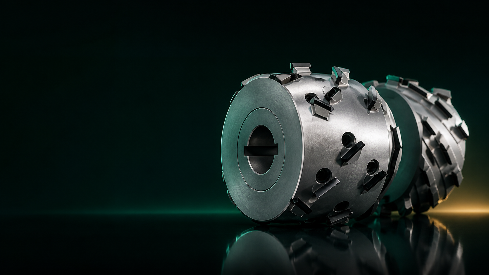
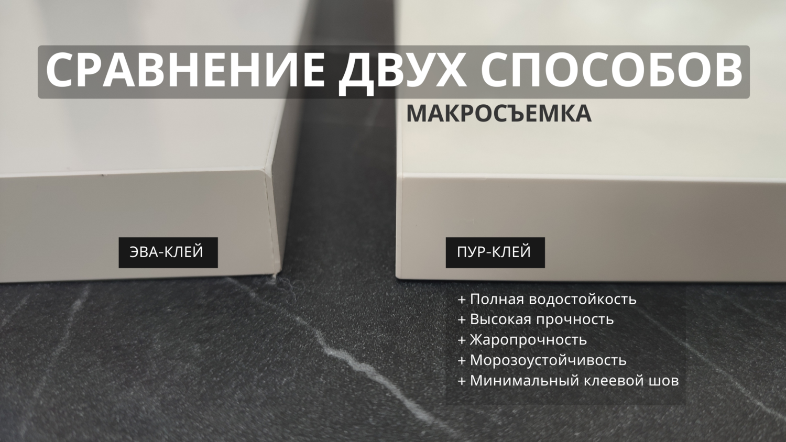
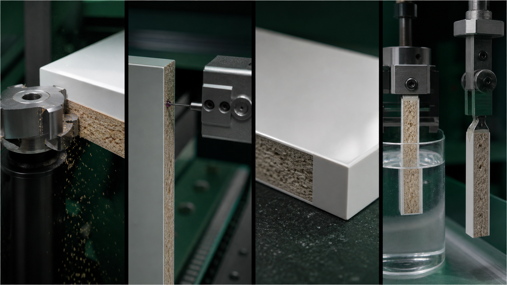
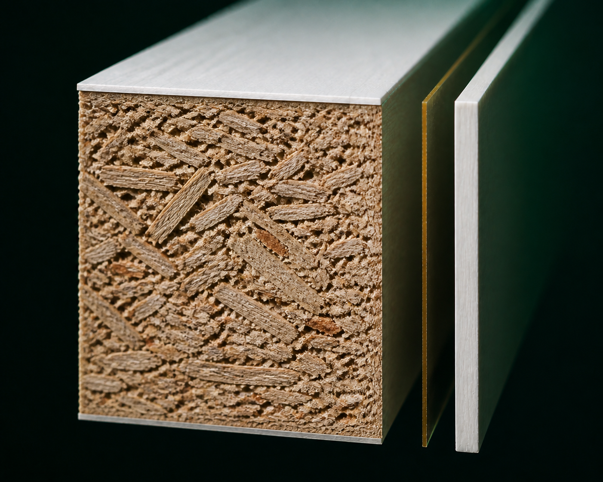

Инструмент выбирают по цене, поставщику или прошлому опыту.
ПРОЕКТ ДЛЯ АСПИРАНТУРЫ
От инструмента —
к управляемому качеству
Как геометрия алмазной фуговальной фрезы превращается в качество торца, свойства кромочного шва и экономический результат.
Концепция и экономическая модель разработаны. Технологические зависимости предстоит проверить экспериментально.

ПРОБЛЕМА
Качество мебели часто пытаются «докупить»
Предприятие устанавливает PUR- или laser-систему, но оставляет прежнюю фрезу и режимы. Дорогая технология наносится на нестабильно подготовленный торец и не раскрывает свой потенциал.
Фрезу, клей, скорость и качество рассматривают раздельно.
Покупают PUR или laser, не проверяя готовность предыдущей операции.
Качество клеевого соединения начинает формироваться ещё до нанесения клея.
ЦЕНТРАЛЬНАЯ ЛОГИКА
Инструмент → Торец → Шов → Качество → Экономика
01Геометрияаксиальный угол λ
→
02Резаниесила • нагрузка • шум
→
03ТорецRa/Rz • сколы • микрорельеф
→
04Шовпрочность • вода • отслаивание
→
05Результатскорость • брак • TCO
НАУЧНЫЙ РЫЧАГ
Аксиальный угол меняет характер резания
С ростом λ рез становится более скользящим. Расчётная модель предполагает уменьшение эффективной толщины срезаемого слоя и силы, но величина реального эффекта должна быть установлена экспериментально.
hэфф = h · cos λ
Fc(λ) = Fc(0) · cosp λ
Fc(λ) = Fc(0) · cosp λ
hэфф / h0,67
Fc / F0, p=0,60,79
стоимость владения0,62 ₽/м
Параметры резания — расчётный ориентир. Стоимость — интерполяция между рассчитанными вариантами, а не доказанная причинная зависимость.

EVA базовая системаPUR основной объектLASER перспективная проверка
НАУЧНЫЙ ЗАДЕЛ
Магистерская дала экономическую основу
В магистерской работе сравнивались шесть геометрий по полному пробегу, стоимости владения и окупаемости мероприятий. Это расчётный научный задел и исходная гипотеза аспирантского эксперимента.
Объект сравненияDP-фрезы 15°, 30°, 35°, 48°, 54° и 70°
Модельный объёмоколо 40 000 пог. м кромки в месяц
Состав TCOцена + переточки + резервный комплект
Инвестиционная модельгоризонт 3 года, ставка дисконтирования 20%
≈18 000пог. м/мес — ориентир перехода
1,05 млн ₽расчётный NPV за 3 года
0,76 годадисконтированный срок окупаемости
146,8%расчётный IRR
РАСЧЁТНЫЕ РЕЗУЛЬТАТЫ
Полный пробег и стоимость владения
пробег, тыс. м₽/пог. м
Столбцы — расчётный полный пробег. Золотая линия — удельная стоимость владения. Более низкая стоимость 70° не означает, что он лучший по инвестиционному результату.
| Показатель | 15° | 30° база | 35° | 48° DIAREX | 54° | 70° p-System |
|---|---|---|---|---|---|---|
| Полный пробег, тыс. пог. м | 153 | 231 | 660 | 1 147 | 1 591 | 2 730 |
| Стоимость владения, ₽/пог. м | 1,56 | 1,21 | 0,81 | 0,62 | 0,54 | 0,25 |
Рассматриваемые мероприятия
В версии расчёта магистерского сайта М2 дало лучший баланс между ценой входа и трёхлетним NPV. Расхождения с цифрами питч-презентации связаны с другой комплектацией мероприятия; перед публикацией нужно зафиксировать один сценарий.
Главный вывод: единого оптимального инструмента нет. Нужно искать область рациональных решений для конкретных условий.

ЭКСПЕРИМЕНТ
От резания — к свойствам готового шва
- Геометрия30° • 45–48° • 54° • при возможности 70°
- Режим и износподача • съём • стадии затупления
- ТорецRa • Rz • сколы • микрорельеф
- ШовEVA • PUR • laser; прочность и вода 24/72 ч
- Валидацияповторы, статистика и проверка на линии
ИНТЕРАКТИВНАЯ ЛАБОРАТОРИЯ
Проследить весь путь качества
01
Анатомия кромочного соединения
Выберите слой слева. Справа показан реалистичный разрез и последовательность наложения слоёв.
Выберите слой.

КАРТА РЕШЕНИЙ
Не одна «лучшая» фреза, а область выбора
Предварительная область
МАТРИЦА ЭКСПЕРИМЕНТА
Соберите будущую точку испытаний
ИНВЕСТИЦИОННАЯ ЛАБОРАТОРИЯ
Проверьте мероприятие на риск
NPV
IRR
DPP
P(NPV > 0)—
Монте-Карло варьирует годовой эффект в заданном диапазоне. Это сценарная, а не прогнозная модель.
ЦИФРОВОЙ ПРОТОТИП
Конструктор сравнения фрез
Введите параметры инструментов и месячный объём. Модель сравнит стоимость владения. Это экономическая оценка, а не заключение о качестве шва.
| Фреза | Угол | Цена, ₽ | Переточек | Цена переточки | Резерв, ₽ | Пробег, тыс. м | ₽/пог. м |
|---|
Предварительная область по масштабуМатрица основана на расчётной модели магистерской и будет уточняться экспериментально.
ПРИНЦИП ДОКАЗАТЕЛЬНОСТИ
Что известно, а что ещё предстоит проверить
Установлено расчётом
TCO, инвестиционная модель, чувствительность и влияние масштаба.
Ожидаемый эффект
Снижение сил, рост допустимой подачи, изменение шума и микрорельефа.
Предстоит проверить
Связь λ → торец → PUR/laser → прочность и влагостойкость.